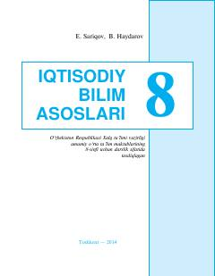

IB8-sinf o'quvchilari uchun iqtisodiyot asoslari bo'yicha o'quv darsligi.
Mazkur darslik umumiy o'rta ta'lim maktablarining 8-sinf o'quvchilari uchun mo'ljallangan bo'lib, iqtisodiyot asoslari, bozor munosabatlari va soliq tizimi haqida boshlang'ich bilim beradi. Kitobda iqtisodiy tushunchalar hayotiy misollar va sodda tilda yoritilgan.